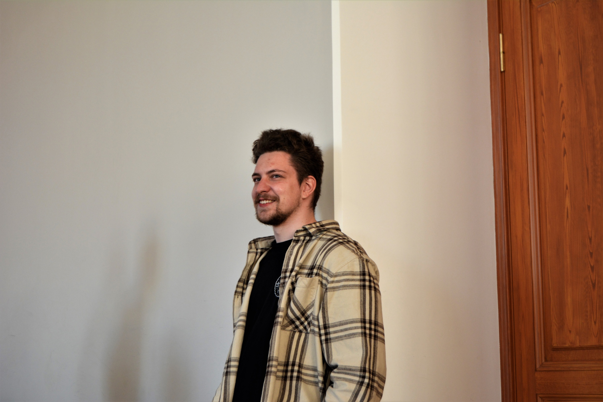

А сейчас давайте познакомимся поближе с
Владиславом Пархоменко.

💭Привет, Влад. Хочется узнать о тебе побольше по этому предлагаю сразу переходить к вопросам. Где учишься или учился?
✨Привет! Я закончил Политехнический университет на направлении «Физика».
💭Ого, тогда сейчас ты где то работаешь или может дальше пошел учиться?
✨Сейчас я учусь на первом курсе магистратуры по направлении «Физика космических и плазменных процессов».
💭Удачи тебе в учебе! А есть какие-нибудь хобби у тебя?
✨Вообще изначально я не был большим фанатом космоса и астрономии – я помню, как мне было страшно в детстве от огромности называемых расстояний и временных промежутков. Но мое любопытство вернуло меня к этим темам через какое-то время. Завораживающие объекты и события, которым наполнено космическое пространство. Долгое время я относился к этому как небольшому увлечению – на тот момент я давно решил стать архитектором. Кстати, физику я учил именно для того, чтобы понимать, как строятся здания, но знания механики пригодились и для описания движения планет и других небесных тел.
💭Как много всего интересного, тогда расскажешь нам о себе поподробнее?
✨В 11 классе достаточно резко решил перепрофилироваться на физику. Отсутствие привычки решать задачи и тесты сыграли со мной плохую шутку во время ЕГЭ и на первых курсах. Было тяжело учиться и приходилось адаптироваться всеми способами. Благо хорошее мотивационное письмо и достижения из школьной астрономии позволили мне попасть на кафедру космических исследований. Тут благо я смог проявить себя – мне удалось попасть к научному руководителю, который дал мне работу по теории большого взрыва, которую я смог защитить на «отлично», и стать победителем олимпиады «Я-профессионал» по направлению «Освоение космоса».
💭Жизнь у тебя насыщенная, а откуда ты узнал о школе А5?
✨О «А5 школе» я узнал от коллег по политехническому сообществу студентов-физиков, а именно от Лизы Патроновой, одного из инициаторов и вдохновителей проекта. Рад присоединиться к работе в качестве преподавателя курса.
💭Вау, смотрю жизнь у тебя крайне увлекательная. А почему решил преподовать именно этот курс?
✨Преподаванием я занимаюсь уже четыре года. За это время я участвовал в различных выездных школах, где рассказывал курсы по физике, астрономии, космонавтике и критическому мышлению. Сейчас я смог получить переквалификацию педагога и с этого года работаю в школе, где учу физике все классы с 7 по 11 и участвую в разработке программ для 5-7 классов по естествознанию. Мне интересно рассказать этот курс, так как хочется хотя бы познакомить как можно больше людей с прекрасным миром астрономии и физики, показать фундаментальные идеи и концепции, которые описывают Вселенную вокруг нас, побольше рассказать о своей специализации и помочь с поиском своего профессионального и академического пути.
💭Ну я уверен на твоем курсе можно узнать много нового и главное интересного! Ну и последний вопрос. Что бы ты посоветовал людям по жизни?
✨Главный совет, который хочется дать, как бы банально он не звучал, пробуйте - намного больше людей не попробует и у вас всегда есть шанс оказаться где-то первым и уникальным. Только действие может привести к результату и не важно насколько малым оно было.
💭Спасибо за ответы, было интересно с тобой побеседовать. Еще раз удачи тебе по жизни и надеюсь цели ты добьешься.
Узнать больше о других преподователях вы можите так же у нас на сайте.
Всем хорошего настроения🥰